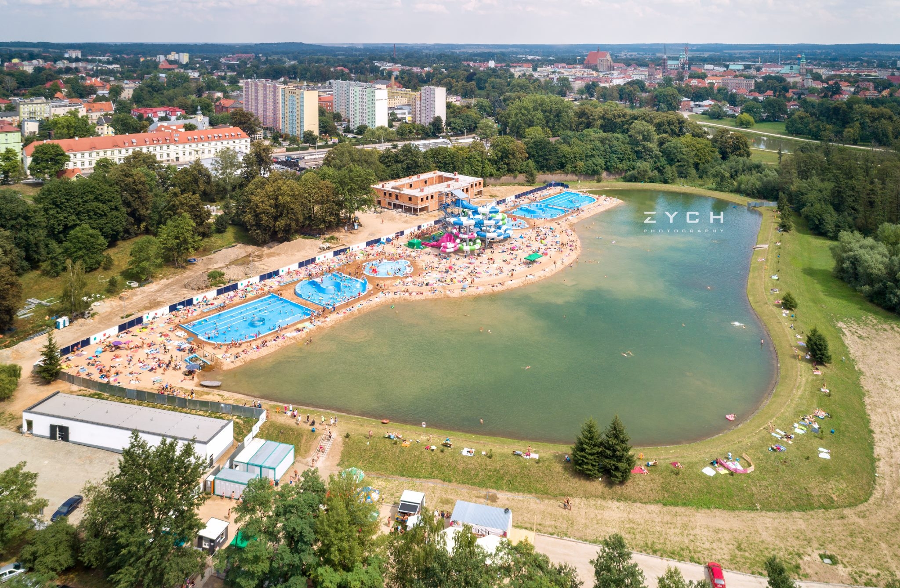

Kąpielisko miejskie
 Kąpielisko Miejskie przy ul. Ujejskiego 25 usytuowane jest bliżej centrum miasta, co pozwala na aktywny wypoczynek dzieci i młodzieży, która spędza wakacje w mieście. Jest to obiekt o powierzchni 20.000 m² posiadający piaszczystą plażę i tereny zielone. Na terenie Kąpieliska znajdują się małe punkty gastronomiczne. Osoby preferujące aktywny wypoczynek mogą skorzystać z boiska do koszykówki lub siatkówki.